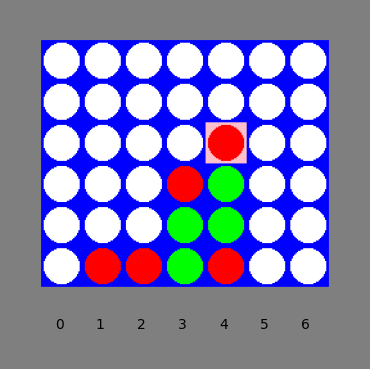
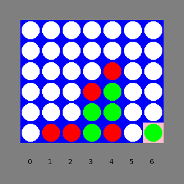
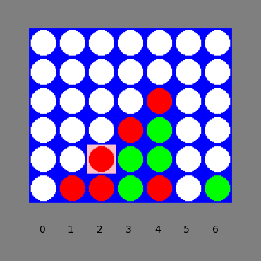
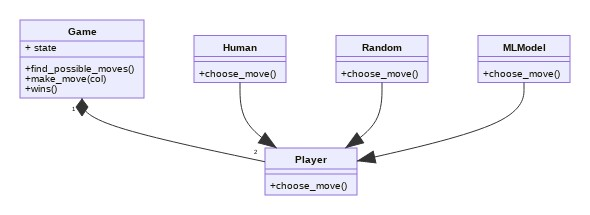
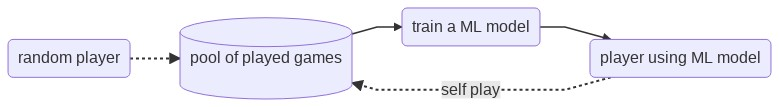
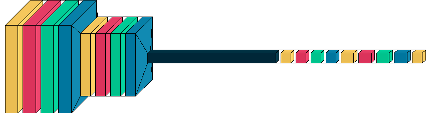
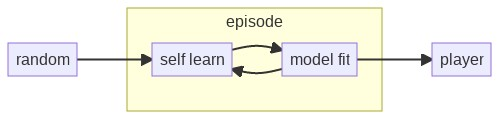

Machine Learning Connect4
Data Science Graduation, Spiced Academy
Jens Krause
01.04.2021
Rules of the game
 
- Two players, 6 rows, 7 columns + gravity
- How to win: 4 pieces in a row in any direction
- Computer shall only learn from these rules!
Environment
- Game implements the rules
- Players will be ask to
choose_move

Supervised Learning (SL)
- SL needs labeled data
- Data generated by the computer playing
- Labels: this state leads to A/B winning \(\rightarrow [+1,-1]\)
- ML model returns score (i.e. 1 output)
- As a player, the model checks score of all possible moves and selects one

SL: Best Model
cc3d: Input (6,7,2), output (1)- Artificial neural network (Keras)
- Conv2d(256)\(\rightarrow\)Conv2d(128)\(\rightarrow\)Dense(128)\(\rightarrow\)Dense(256)\(\rightarrow\)Dense(1)\(\rightarrow\)tanh

Reinforcement Learning (RL)
- Only a reward of the environment to an action
- Iterations to learn the environment
- Exploration: evaluating policies (player and opponent)
- Expoitation: fit ML / predict from ML
- Model returns score (1) and policies (7)

Evolution

The ANN learns to play better over several episodes
Thanks to
- A Simple Alpha(Go) Zero Tutorial by Surag Nair
- Mastering the game of Go without human knowledge by D. Silver et al.
- … and of course: Malte, Sara, Sam, Marija,